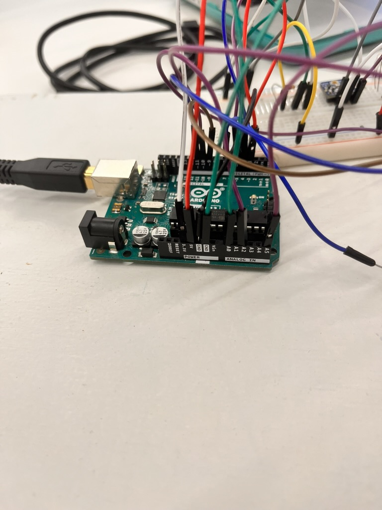

For my final project, I decided to make a puzzle box. For as long as I can remember, I have loved riddles, puzzles, and treasure hunts. My inspiration for this box comes from my experience in escape rooms and watching National Treasure as a kid. I decided to theme the box after a pirate quest that involves 3 fundamental elements: water, fire, and air.
The design of the exterior of the box was simple: a press fit wooden cube with a couple of holes that I drilled. Thanks to MakerCase for the box design, it really came in clutch during project week!
Here is the file for the box itselfThe inside of the box was more challenging. I set up a simple Arduino circuit to wire the first puzzle, then added the next two puzzles onto the breadboard afterward. The breadboard features a thermistor, a microphone, and a capacitive sensor held together by alligator clips and copper sheets. Instead of showing the circuit on a diagram, I am submitting a video of the circuit because the diagram was too confusing. The interior of the box is intentionally not enclosed under a false bottom. I will expand on why later on.
Also on the breadboard are 3 Servo motors and three led lights (red, blue, and white). After the fire puzzle is solved, the red led lights up, and the servo unlocks from its locking mechanism that I fashioned out of a shim. The same happens for water and air, with blue and white, respectively.

The most difficult part of the puzzle box was the code. I used different libraries, sensors, and created functions to detect if a sensor had been satisfied or not using Boolean logic. Once everything seemed to work outside of the box, I put the guts and wires inside of the box and drew power from a battery. This way, I didn’t need to have my computer connected to the box itself.
In a last second decision, I also added some laser cut artwork using the Hatch function in Rhino. This allowed me to create an appealing exterior to the box to convey the pirate theme to the user.
The functionality of the box is as follows: When a user heats up the thermistor to 25 degrees Celsius using their breath, one servo turns 90 degrees (out of it’s locking mechanism) and the red led lights up. When the user touches both screws in the water side of the box, the current flows through them, satisfying the capacitative threshold, and the servo unlocks and the blue led turns on. When the user claps or blows into the hole of the air side of the box (the cave of Whispers), the microphone detects a loud volume and the servo unlocks and the white led turns on. Once all three conditions are met (in no particular order), the user can open the box to see its guts.

Now about the guts: I am marketing this box as a kit for children to learn about digital fabrication. The idea is to send kids a kit with all of the supplies they need (wood, hinges, wires, chips, sensors, etc.) as well as coding demo lessons so they can learn how to code the box themselves. This inspiration comes from Mark Rober, who sparked an interest in me through mechanical engineering. I am very proud of the progress I made with the box and am glad that I turned a childhood passion into a tangible fabrication!
This project seems really simple, as there is only one input and one output, but figuring out how to code on both Cam's computer and my computer was pretty tricky. WiFi integration is a really cool application of Arduino, and I hope that this project helps Cam in the final!